Primary Dataset: Philadelphia Property Sales
Code
library(tidyverse)
library(tidycensus)
library(sf)
library(tigris)
library(FNN)
library(ggplot2)
library(patchwork)
library(caret)
###Phase 1: Data Preparation
####Load and Clean Philadelphia Sales Data
home_prices <- st_read("opa_properties_public.geojson")
home_prices <- home_prices %>%
st_transform(2272)
home_prices <- home_prices %>%
filter(
substr(sale_date, 1, 4) %in% c("2023", "2024", "2025")
)
home_price_resi <- home_prices %>%
filter(
category_code_description %in% c("SINGLE FAMILY" , "MULTI FAMILY")
)
#####Further filtering based on building code description
to_filter <- c("PD PKG LOT COMMERCIAL", "HSE WORSHIP ALL 1 STY FRM", "OFF BLD N/COM W/PKG MASON",
"AUTO REPAIR SHOP MAS+OTH", "MISC FUNERAL HOME MASONRY", "HOTEL/RM HSE 4 STY MASON",
"HSE WORSHIP ALL 2 STY M+O", "OFF BLD COM NO GAR MASON", "VACANT LAND COMMER < ACRE",
"IND SHOP MASONRY", "HEALTH FAC CLINIC MASONRY", "IND LOFT MASONRY",
"IND WAREHOUSE MASONRY", "AMUSE HALL MASONRY", "AMUSE TV/RADIO STA MAS+O",
"NON PD PKG LOT COMMERCIAL", "VACANT LAND INDUST ACRE+", "AUTO REPAIR SHOP MASONRY",
"PKG LOT NON COMMERCIAL", "HSE WORSHIP ALL 1 STY MAS", "AMUSE SWIM POOL MASONRY",
"CONDO PARKING SPACE", "IND. LGHT MFG MASONRY", "HSE WORSHIP ALL 2 STY MAS",
"VACANT LAND INDUST < ACRE", "OFF BLD N/PKG N/COM MASON", "VACANT LAND RESIDE < ACRE",
"HOTEL/RM HSE 3 STY MASON", "HSE WORSHIP ALL 3 STY MAS")
home_price_resi <- home_price_resi %>%
filter(!building_code_description %in% to_filter)
home_price_resi <- home_price_resi %>%
filter(!(number_of_bathrooms == 0 & number_of_bedrooms == 0))
home_price_resi_filter <- home_price_resi %>%
filter(sale_price >= 10000 & sale_price <= 1000000)
## getting the count of different sale price brackets to help filter for outliers
home_price_resi_filter_test <- home_price_resi_filter %>%
mutate(price_range = case_when(
sale_price <= 0 ~ "Zero or Negative",
sale_price <= 2 ~ "Under $2",
sale_price <= 500 ~ "$2 - $500",
sale_price <= 1000 ~ "$500 - $1K",
sale_price <= 5000 ~ "$1K - $5K",
sale_price <= 10000 ~ "$5K - $10K",
sale_price <= 25000 ~ "$10K - $25K",
sale_price <= 50000 ~ "$25K - $50K",
sale_price <= 100000 ~ "$50K - $100K",
sale_price <= 200000 ~ "$100K - $200K",
sale_price <= 300000 ~ "$200K - $300K",
sale_price <= 400000 ~ "$300K - $400K",
sale_price <= 500000 ~ "$400K - $500K",
sale_price > 500000 ~ "Over $500K"
)) %>%
group_by(price_range) %>%
summarize(count = n()) %>%
arrange(count)
#
# home_price_resi_filter <- home_price_resi %>%
# filter(sale_price > 0) %>%
# mutate(ln_sale_price = log(sale_price),
# z_score = as.numeric(scale(ln_sale_price))) %>%
# filter(abs(z_score) <= 2)
#####Joining to ACS DATA
##ACS Data
acs_data2 <- get_acs(
geography = "tract",
variables = c(
tot_pop = "B01003_001",
white_nh = "B03002_003",
black_nh = "B03002_004",
asian_nh = "B03002_006",
hispanic = "B03002_012",
two_more_nh = "B03002_009",
Median_household_income = "B19013_001",
edu_attain_25plus = "B15003_001",
vacancy = "B25004_001",
tot_homes = "B25136_001",
poverty_below = "B17001_002"
),
state = "PA",
county = "Philadelphia",
year = 2023,
geometry = TRUE,
output = "wide"
)
acs_data2 <- acs_data2 %>%
mutate(
vacany_rate = (vacancyE/tot_homesE)*100,
pov_rate = (poverty_belowE/tot_popE)*100
) %>%
st_transform(2272)
acs_data2 <- acs_data2 %>%
mutate(propwhite = (white_nhE/tot_popE) * 100, propblk = (black_nhE/tot_popE) *100, propedu = (edu_attain_25plusE/tot_popE) *100,
propasian = (asian_nhE/tot_popE) * 100, prophisp = (hispanicE/tot_popE) * 100, proptwoplus = (two_more_nhE/tot_popE) * 100)
home_price_resi_filter_FINAL <- home_price_resi_filter %>%
st_join(acs_data2, join = st_intersects)
##Supplementary Spatial Data
###crime
crime <- st_read("data/incidents_part1_part2.shp") %>%
rename(crime_type = text_gener)
crime_selected<- crime %>%
filter(crime_type %in% c("Aggravated Assault Firearm", "Burglary Residential", "Homicide - Criminal", "Motor Vehicle Theft", "Rape")) %>%
st_transform(2272)
###schools
schools <- st_read("data/Schools.shp")
schools<- schools %>%
st_transform(2272)
###transit
transit <- st_read("data/Transit_Stops_(Spring_2025).shp") #only 2025 available
transit_filtered <- transit %>%
filter(LineAbbr %in% c("T1", "T2", "T3", "T4", "T5", "MFL", "BSL", "G1")) %>%
st_transform(2272)
### illegal dumping complaints
call_311 <- st_read("data/public_cases_fc.shp")
call_311_illegal <- call_311 %>%
filter(subject == "Illegal Dumping") %>%
st_transform(2272)
###catchement
catchment <- st_read("data/SchoolDist_Catchments_ES.shp")
catchment <- st_transform(catchment, st_crs(home_price_resi_filter_FINAL))
###philly neighborhoods
hoods <- st_read("data/philadelphia-neighborhoods.shp")
hoods <- hoods %>%
st_transform(crs = 2272)##Narrative Explaining Decisions We filtered the data-set for home sales that were not residential structures ;this included vacant land, warehouses and parking spaces. Next, extreme outliers were removed by filtering based on the 95th quantile, meaning we retained the bottom 95% of the data’s distribution. This approach uses the natural distribution of the data to determine a threshold for extreme values rather than on an arbitrary one. Additionally, we choose spatial data that the literature has already proven to influence housing price sales. We filtered transit data for trains and trolleys, as these modes tend to be more favorably perceived by the public and may explain higher sale prices. School catchment was chosen to evaluate school quality which is also studied to explain home sale prices. The crime data-set was filtered for crimes that we believe posed the most direct threat to residents. We chose ACS Census variables that we believe would influence sale price, including race, income, poverty and education level. Proportions were created to normalize race, poverty and vacancy count against population. This results in a more accurate and comparable representation of each variable.
Code
###Phase 2: Exploratory Data Analysis
options(scipen = 999)
#1 Distribution of sale prices (histogram)
#Explanation: This histogram illustrates the distribution of home sale prices. Although outliers were removed using the 95quantile methods, it is not normally distributed and has a right skew. Essentially, this means that as homes get more expensive the quantity/count of homes sales decreases.
# ##NORMAL
ggplot(home_price_resi_filter, aes(x = sale_price)) +
geom_histogram(bins = 50, fill = "purple", color = "white") +
labs(title = "Sale Price Distribution",
x = "Sale Price",
y = "Count") +
theme_minimal()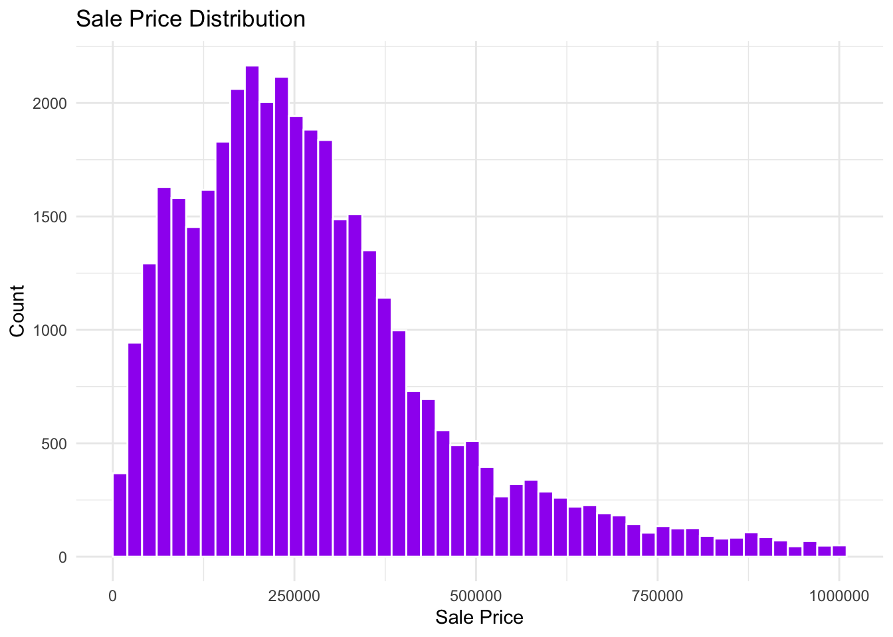
Code
#LOGGED
hist(log(home_price_resi_filter$sale_price),
breaks = 50,)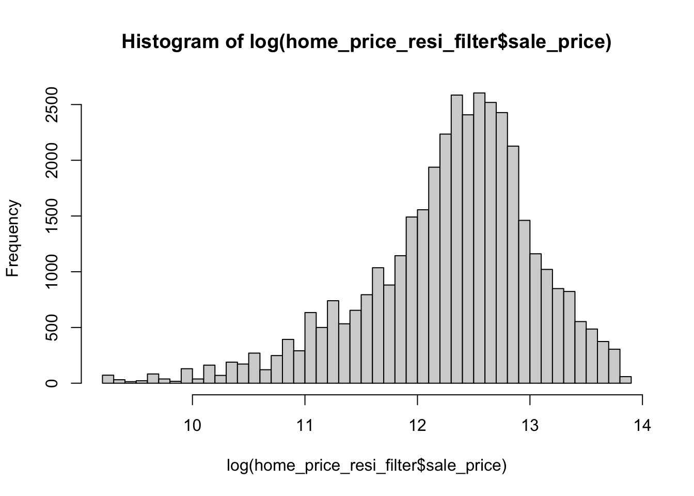
Code
#2 Geographic Distribution(map)
library(tmap)
sale_price_census <- home_price_resi_filter_FINAL %>%
st_drop_geometry() %>%
group_by(GEOID) %>%
summarise(median_price = median(sale_price)) %>%
left_join(acs_data2 %>% select(GEOID, geometry), ., by = "GEOID") %>%
st_as_sf()
tm_shape(sale_price_census) +
tm_polygons(fill = "median_price",
fill.scale = tm_scale_intervals(style = "jenks"),
fill.legend = tm_legend(title = "Median Sale Price ($)",
position = tm_pos_out("right", "center"))) +
tm_title("Median Sale Price by Census Tract") +
tm_credits("Source: Philadelphia Property Sales, 2023-2025, ACS 2023",
position = c("right", "bottom")) +
tm_layout(
attr.position = c("right", "bottom"),
inner.margins = c(0.04, 0.04, 0.04, 0.4))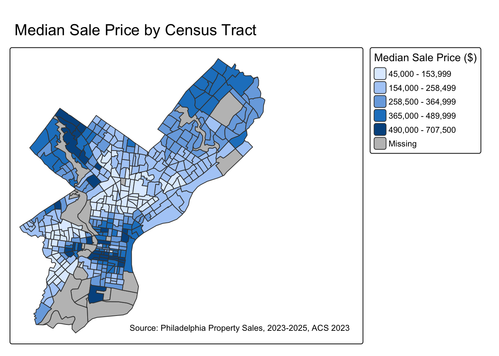
Code
#Explanation: This map illustrates the distribution of median home prices across Philadelphia. The areas without home sale prices reported within our time frame is shaded in grey. It is apparent that median home prices tend to cluster in certain parts of Philadelphia, particularly North West and West Philadelphia and Center City. Overall, median home prices is quite varied across the city.
#3 Price vs Structural Features (scatter plots)
#year built
home_price_resi_filter_FINAL <- home_price_resi_filter_FINAL %>%
mutate(year_built = as.numeric(year_built))
ggplot(home_price_resi_filter_FINAL, aes(x = year_built, y = sale_price)) +
geom_point(alpha = 0.2, size = 0.5, color = "steelblue") +
geom_smooth(method = "loess", color = "red", linetype = "dashed", se = FALSE) +
scale_x_continuous(limits = c(1850, 2025)) +
labs(
title = "Sale Price vs. Year Built (age)",
x = "year built",
y = "Sale Price ($)",
caption = "Source: Philadelphia Property Sales, 2023-2025"
) +
theme_minimal()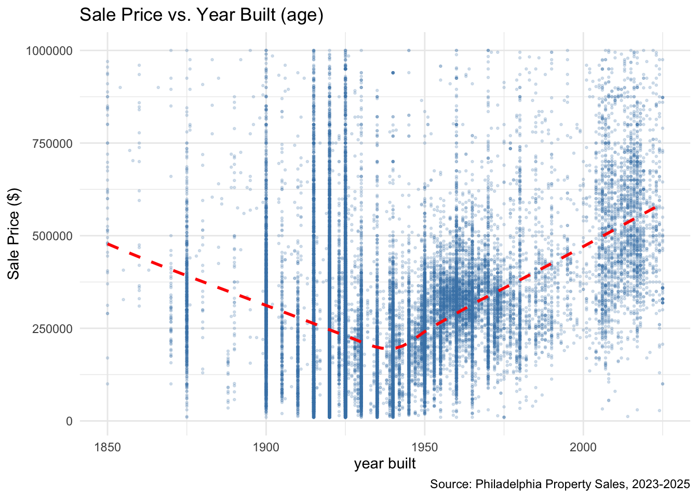
Code
#Expalantion: This scatterplot shows year built plotted against sale price. We observe a slight U-shaped pattern in the relationship, which informed our decision to create an age variable, square it, and include it in our model. Homes built before 1900 and after 1980 tend to have the highest sale prices, while mid-century homes (1900–1950) sell for less. This suggests that both modern construction and historic Philadelphia charm carry a price premium—something a simple linear model may not fully capture.
#livable area
ggplot(home_price_resi_filter_FINAL, aes(x = total_livable_area, y = sale_price)) +
geom_point(alpha = 0.2, size = 0.5, color = "steelblue") +
scale_y_continuous(labels = scales::dollar, limits = c(0, 1100000)) +
geom_smooth(method = "lm", color = "red", linetype = "dashed", se = FALSE)+
labs(
title = "Sale Price vs. Total Livable Area",
x = "Total Livable Area",
y = "Sale Price ($)",
caption = "Source: Philadelphia Property Sales, 2023-2025"
) +
theme_minimal()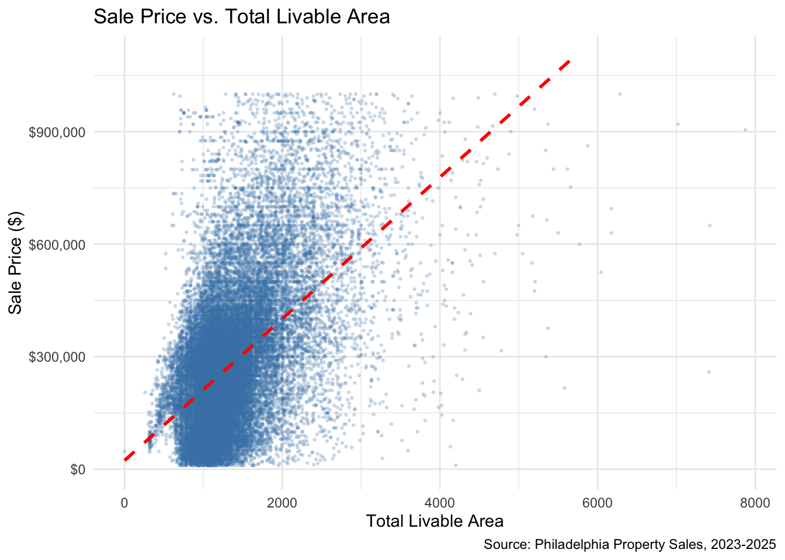
Code
##Explanation: This scatterplot exhibits a positive correlation between total livable area and sale price, higher livable area is associated with an increase in sale price. Most properties have a total livable area below 2000 and are sold below $500,000. The strong correlation that shown through the red line also may suggest that it will have strong predictive power.
#4 Price vs Spatial Features (scatter plots)
#included in phase 3 after spatial feature generation
#5 One creative visualization
boxplot(log(home_price_resi$sale_price),
main = "Sale Price Distribution (Log Scale)",
ylab = "Log of Sale Price",
col = "lightblue")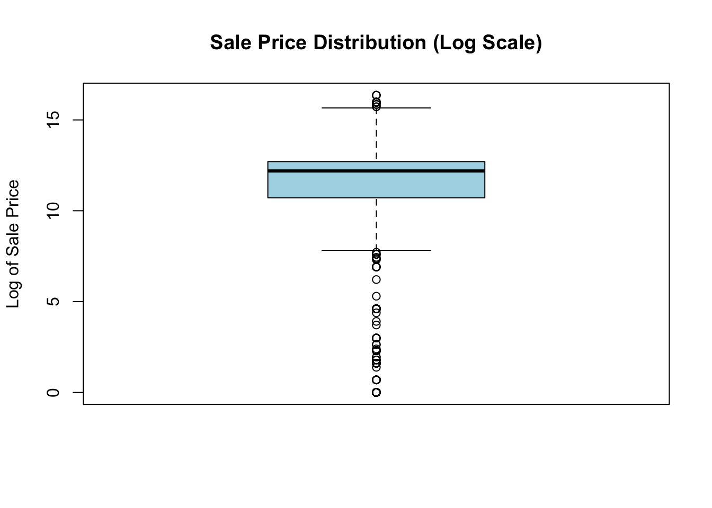
Code
#Explanation: This box plot shows the distribution of log-transformed sale prices. The middle 50% of values are tightly clustered, with the median sitting near the center of the box. Although the log transformation is supposed to reduce skewness, we still observe a number of low-end outliers, highlighting the unusually low sale prices in the data set. Overall, the transformation helps stabilize the spread, but some extreme values on both the higher and low end remain present. We were curious to see how logging sale price would change the distribution further after eliminating outliers- however logged sale prices were not used in any of our final models. Code
###Phase 3: Feature Engineering
#1 Buffer Based Features
###schools
home_price_resi_filter_FINAL <- home_price_resi_filter_FINAL%>%
mutate(
school.buffer = lengths(st_intersects(
st_buffer(geometry, 2640), #1/2 mile
schools)))
#We examined the relationship between home sale prices and homes situated near a greater number of schools, to see if locational proximity to schools impacted sale price.
#2 k-Nearest Neighbor features:
###crime
#we grouped crime type to better see the different types of crime
crime_types <- crime %>%
group_by(crime_type) %>%
summarise(
n = n()
)
home_coords <- st_coordinates(home_price_resi_filter_FINAL)
crime_coords <- st_coordinates(crime_selected)
home_clean <- !is.na(home_coords[,1]) & !is.na(home_coords[,2])
crime_clean<- !is.na(crime_coords[,1]) & !is.na(crime_coords[,2])
home_coords <- home_coords[home_clean,]
crime_coords <- crime_coords[crime_clean,]
nn_crimet <- get.knnx(crime_coords, home_coords, k = 5)
home_price_resi_filter_FINAL <- home_price_resi_filter_FINAL[home_clean,]
home_price_resi_filter_FINAL$crime_avg_dist <- rowMeans(nn_crimet$nn.dist)
#Explanation: We wanted to examine the relationship between home sale prices and the distance to the 5 nearest crime occurrences, using the filtered crime data identified earlier.
#illegal dumping
call_311_coords <- st_coordinates(call_311_illegal)
call311_clean <- !is.na(call_311_coords[,1]) & !is.na(call_311_coords[,2])
call_311_coords <- call_311_coords[call311_clean,]
nnt <- get.knnx(call_311_coords, home_coords, k = 50)
nnnt <- get.knnx(call_311_coords, home_coords, k = 5)
home_price_resi_filter_FINAL$illegal_avg_dist <- rowMeans(nnnt$nn.dist)
#Explanation: Illegal dumping is often a marker for poor housing conditions, vacancy and overall negligent, which the literature has shown to influence home sales prices.
#transit
#we grouped transit type to better see the different types of transit
transit_grouped <-transit %>%
group_by(LineAbbr) %>%
summarize(n = n())
transit_coords <- st_coordinates(transit_filtered)
transit_clean <- !is.na(transit_coords[,1]) & !is.na(transit_coords[,2])
transit_coords <- transit_coords[transit_clean,]
nntt <- get.knnx(transit_coords, home_coords, k = 50)
nnntt <- get.knnx(transit_coords, home_coords, k = 5)
home_price_resi_filter_FINAL$transit_avg_dist <- rowMeans(nnntt$nn.dist)
#Explanation: We wanted to examine the relationship between home sale prices and the distance to the 5 nearest transit(rail and trolley) stations. Transit stops were filtered for just rail and trolley stations due to transportation literature highlighting that these modes of public transportation are more preferred than buses.
#3 Census variables:
#joins are created in phase 1.
#4 Geographies/ Boundaries
#catchment school boundaries
home_price_resi_filter_FINAL <- st_join(
home_price_resi_filter_FINAL,
catchment,
join = st_within
)
#Explanation: We wanted to explore th effect of school boundaries on home price sales. School boundaries can act as a proxy for school quality, capturing differences in neighborhood desirability. Additionally, it creates a more granular geographic unit than broader areas like neighborhood boundaries or census tracts.
#philly neighborhoods
home_price_resi_filter_hood <- home_price_resi_filter_FINAL%>%
st_join(hoods, join = st_intersects)
price_by_nhood <- home_price_resi_filter_hood %>%
st_drop_geometry() %>%
group_by(MAPNAME) %>%
summarize(
n_sales = n(),
median_price = median(sale_price)
)
# Join back to spatial data
price_by_nhoodS <- hoods %>%
left_join(price_by_nhood, by = "MAPNAME")
# # Create custom price classes
price_by_nhoodS <- price_by_nhoodS %>%
mutate(
price_class = cut(median_price,
breaks = c(0, 400000, 600000, 800000, 1000000, Inf),
labels = c("Under $400k", "$400k-$600k", "$600k-$800k",
"$800k-$1M", "Over $1M"),
include.lowest = TRUE))
#Explanation: We were interested in using neighborhoods as the geographic unit of analysis instead of census tracts to see if home sale prices could be better predicted.
#5 Interaction Terms:
##Grouping by neighborhood to get interaction effects
home_price_resi_filter_type <- home_price_resi_filter_hood %>%
group_by(building_code_description) %>%
summarize(median_price = median(sale_price),
n_sales = n())
home_price_resi_filter_hood_v2 <- home_price_resi_filter_hood %>%
group_by(MAPNAME) %>%
summarise(median_price = median(sale_price, na.rm = TRUE),
n_sales = n())%>%
filter(median_price >= 359000)
quantile(home_price_resi_filter_hood_v2$median_price)
wealthy_hoods <- home_price_resi_filter_hood_v2 %>%
pull(MAPNAME)
# Create binary indicator (factor)
home_price_resi_filter_hood <- home_price_resi_filter_hood %>%
mutate(
wealthy_neighborhood = ifelse(MAPNAME %in% wealthy_hoods, "Wealthy", "Not Wealthy"),
wealthy_neighborhood = as.factor(wealthy_neighborhood)
)
#We created an interaction term between neighborhood wealth and proximity to transit to test whether the value of being near trains and trolleys depends on the wealth of the area. Instead of assuming transit access has the same effect everywhere, this allows the model to estimate whether it is more or less valuable in wealthier neighborhoods.
#6 Polynomial
# Calculate age from year built
home_price_resi_filter_FINAL <- home_price_resi_filter_FINAL%>%
mutate(Age = 2026 - year_built)
# Check the distribution of age
summary(home_price_resi_filter_FINAL$Age)
# Visualize age distribution
ggplot(home_price_resi_filter_FINAL, aes(x = Age)) +
geom_histogram(bins = 30, fill = "steelblue", alpha = 0.7) +
scale_x_continuous(limits = c(0, 300)) +
labs(title = "Distribution of House Age in Philadelphia",
x = "Age (years)",
y = "Count") +
theme_minimal()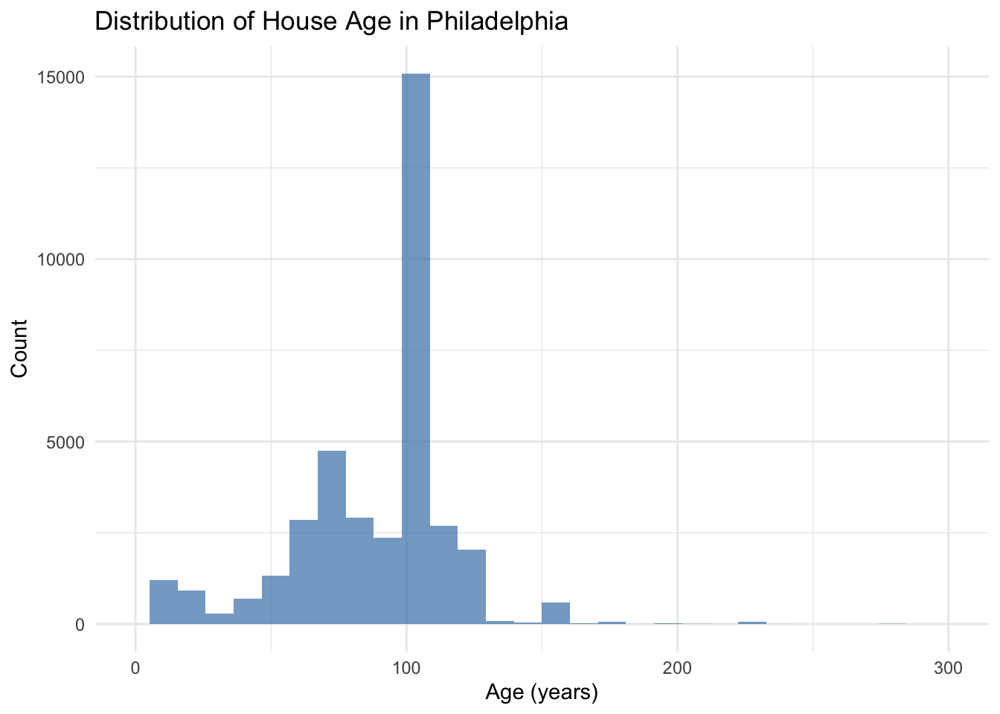
Code
#Explanation: Age often takes on a polynomial relationship with sale price and so we wanted to capture that relationship to increase our model's predictive capabilities. Code
##Price vs. spatial features (scatter plot)
#Transit
ggplot(home_price_resi_filter_FINAL, aes(x = transit_avg_dist, y = sale_price)) +
geom_point(alpha = 0.2, size = 0.5, color = "steelblue") +
scale_y_continuous(labels = scales::dollar) +
labs(
title = "Sale Price vs. Distance to Nearest Transit Stops",
x = "Average Distance to 5 Nearest Transit Stops (ft)",
y = "Sale Price ($)",
caption = "Source: Philadelphia Property Sales, 2023-2025"
) +
theme_minimal()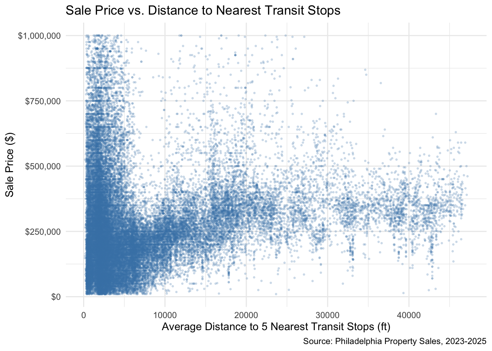
Code
#####Phase 4: Model Building
library(car)
##Regression 1 - Structural
reg1 <- lm(sale_price ~ number_of_bedrooms + number_of_bathrooms + total_livable_area + interior_condition + exterior_condition + number_stories,
data = home_price_resi_filter_FINAL)
summary(reg1)
##Regression 2 - Structural + Spatial
reg2 <- lm(sale_price ~ crime_avg_dist + transit_avg_dist + school.buffer + illegal_avg_dist + total_livable_area + number_of_bedrooms + number_of_bathrooms + number_stories + interior_condition + exterior_condition,
data = home_price_resi_filter_FINAL)
summary(reg2)
#Regression 3 - Structural + Spatial + Fixed Effects (Neighbourhoods + Catchment)
reg3 <- lm(sale_price ~ crime_avg_dist + transit_avg_dist + illegal_avg_dist + total_livable_area + interior_condition + exterior_condition +
number_of_bedrooms + number_of_bathrooms + number_stories +
as.factor(MAPNAME) + as.factor(es_id),
data = home_price_resi_filter_hood)
summary(reg3)
#Regression 4 - Structural + Spatial + Fixed Effects (Neighbourhoods + Catchment) + Interaction
reg4 <- lm(sale_price ~ crime_avg_dist + transit_avg_dist + illegal_avg_dist + number_of_bedrooms +number_of_bathrooms + number_stories + interior_condition+ exterior_condition + transit_avg_dist*wealthy_neighborhood + as.factor(MAPNAME) + as.factor(es_id),
data = home_price_resi_filter_hood)
summary(reg4)
##Regression 5 - Structural + Spatial + Fixed Effects (CT + Catchment)
reg5 <- lm(sale_price ~ crime_avg_dist + transit_avg_dist + total_livable_area + illegal_avg_dist + interior_condition + exterior_condition + number_of_bedrooms + number_of_bathrooms + number_stories + as.factor(NAME) + as.factor(es_id),
data = home_price_resi_filter_FINAL)
summary(reg5)
##Regression 6 - Structural + Spatial + Fixed Effects (CT + Catchment) + Polynomial
reg6 <- lm(sale_price ~ crime_avg_dist + transit_avg_dist + illegal_avg_dist + number_of_bedrooms + interior_condition + exterior_condition + number_of_bathrooms + number_stories + as.factor(es_id) + as.factor(NAME) + Age + I(Age^2),
data = home_price_resi_filter_FINAL)
summary(reg6)
#####FINAL MODEL######
final_model <- lm(sale_price ~ crime_avg_dist + transit_avg_dist + exterior_condition + illegal_avg_dist + interior_condition + number_of_bedrooms + number_of_bathrooms + number_stories + total_livable_area +
as.factor(es_id) + as.factor(NAME),
data = home_price_resi_filter_FINAL)
summary(final_model)#Regression Analysis
Regression 1 - Structural In this model, larger homes and more bathrooms consistently increase sale prices, with each additional bathroom adding about $52,000 and each square foot adding roughly $179. More bedrooms, surprisingly, are associated with slightly lower prices, possibly reflecting trade-offs in room size or layout. Homes with better interior and exterior conditions also command higher prices, while worse interior conditions reduce value, especially in the lower categories. Each additional story adds around $12,600, and overall the model explains about 45.5% of the variation in sale prices, showing that while home features matter, location and other unmeasured factors still play a major role.
Regression 2 - Structural + Spatial This model predicts residential sale prices using both home features and neighborhood context. The overall model explains about 48.7% of the variation in sale prices,indicating there is still considerable variation driven by other factors not accounted for in the model.
Among neighborhood and location variables, distance from crime has a strong positive effect: each additional unit farther from crime incidents increases predicted sale price by about $132. Proximity to transit also influences prices, though to a smaller degree, with each unit farther from transit slightly increasing price by around $1.2; this indicates accessibility matters but is a weaker driver than core home features. The number of schools within the school buffer areas increase predicted prices by roughly $5,800. Lastly, distance from illegal dumping sites adds slightly to value, though its effect is small (~$13 per unit).
Among home characteristics, each additional square foot in total livable area adds approximately $159. Number of bathrooms also strongly increases value, with each extra bathroom adding around $49,000. Interestingly, number of bedrooms shows a negative coefficient (~$41,000 per additional bedroom).Each additional story adds about $24,800 to sale price, indicating taller homes are valued higher.
Poorer interiors in categories 6 and 7 significantly reduce prices by over $227,000–$256,000, while other categories have smaller or nonsignificant effects. Exterior condition has a strong positive impact: homes with conditions 2–4 increase sale prices by $65,000–$119,000, showing building upkeep are highly valued.
Regression 6 - Structural + Spatial + Fixed Effects (CT + Catchment) + Polynomial This model predicts residential sale prices using a detailed combination of home features, interior and exterior conditions, and neighborhood context. It explains about 70% of the variation in sale prices, with an approximate correlation of 0.838 between predicted and actual prices, indicating a strong fit. This model includes fixed effects for two geographic boundaries, so going over each correlation coefficient would be unproductive, but both variables are proven to improve our model drastically by decreasing the RMSE.
Being farther from crime increases predicted prices by about $56.66 per unit, while being farther from illegal dumping sites adds roughly $28.77 per unit. Distance from transit has a small negative effect, with each additional unit farther away reducing price by about $1.78. Among property characteristics, interior condition is the largest driver of price, with the best conditions adding over $200,000 relative to the reference, and lower conditions contributing progressively less. Bathrooms, bedrooms, and number of stories also strongly increase sale prices, with each additional bathroom adding around $42,000, each bedroom about $36,500, and each story about $32,800. Exterior condition has smaller effects, with moderate positive contributions for some categories and slight negative effects for others, suggesting buyers respond more to interior quality than exterior variations in this model Lastly our Age polynomial variable can not be interpreted like the other independent variables.
Regression Final This model explains 72.8% of the variation in Philadelphia home sale prices, as reflected in the R-squared. Adding spatial fixed effects, including census tract and elementary school catchment zone indicators, improved predictive power considerably. Because of the large number of tracts and catchment zones, it is difficult to interpret each coefficient individually, but overall, both variables significantly enhanced the model. Structural features performed as expected: each additional bathroom adds approximately $26,000 to sale price, each bedroom adds $9,090, total livable area adds $115 per square foot, and each additional story contributes $11,800 Property condition also plays a major role, homes with severely deteriorated exteriors (condition 8) sell for $254,398 less than the reference category. Neighborhood context matters as well. Distance from crime is positively associated with price; increasing predicted sale price by about $34 per unit, while distance from illegal dumping sites adds roughly $20 per unit. Transit access shows a modest effect, with each additional unit of distance decreasing price by about $0.50, perhaps suggesting that much of transit’s impact is already captured by the neighborhood fixed effects. Overall, these results indicate that a well-specified hedonic model incorporating both structural and spatial features provides a strong foundation for Philadelphia’s Automated Valuation Model, though additional refinement in high-variance neighborhoods could further improve accuracy.
Code
#### Phase 5: Model Validation
ctrl <- trainControl(method = "cv", number = 10, savePredictions = "final")
# Model 1: Structural
cv_m1 <- train(
sale_price ~ number_of_bedrooms + number_of_bathrooms + total_livable_area + interior_condition + exterior_condition + number_stories,
data = home_price_resi_filter_FINAL,
method = "lm", trControl = ctrl,
na.action = na.omit
)
cv_m1
# Model 2: Structural + Spatial
cv_m2 <- train(
sale_price ~ crime_avg_dist + transit_avg_dist + school.buffer + illegal_avg_dist + total_livable_area + number_of_bedrooms + number_of_bathrooms + number_stories + interior_condition + exterior_condition,
data = home_price_resi_filter_FINAL,
method = "lm", trControl = ctrl,
na.action = na.omit
)
cv_m2
# Model 3: Spatial + Structural + Fixed Effects (neighbourhoods)
cv_m3 <- train(sale_price ~ crime_avg_dist + transit_avg_dist + illegal_avg_dist + total_livable_area + interior_condition + exterior_condition +
number_of_bedrooms + number_of_bathrooms + number_stories +
as.factor(MAPNAME) + as.factor(es_id),
data = home_price_resi_filter_hood,
method = "lm", trControl = ctrl,
na.action = na.omit
)
cv_m3
# Model 4 (reg4): Spatial + Structural + Fixed Effects (CT) + Fixed Effects(Catchment)
cv_m4 <- train(sale_price ~ crime_avg_dist + transit_avg_dist + illegal_avg_dist + number_of_bedrooms +number_of_bathrooms + number_stories + interior_condition+ exterior_condition + transit_avg_dist*wealthy_neighborhood + as.factor(MAPNAME) + as.factor(es_id),
data = home_price_resi_filter_hood,
method = "lm", trControl = ctrl,
na.action = na.omit
)
cv_m4
# Model 5 Structural + Spatial + Fixed Effects (Neighborhood) + Interaction Effect
cv_m5 <- train(sale_price ~ crime_avg_dist + transit_avg_dist + total_livable_area + illegal_avg_dist + interior_condition + exterior_condition + number_of_bedrooms + number_of_bathrooms + number_stories + as.factor(NAME) + as.factor(es_id),
data = home_price_resi_filter_FINAL,
method = "lm", trControl = ctrl,
na.action = na.omit
)
cv_m5
# Model 6: Spatial + Structural + Fixed Effects (Census) + Polynomial
cv_m6 <- train(sale_price ~ crime_avg_dist + transit_avg_dist + illegal_avg_dist + number_of_bedrooms + interior_condition + exterior_condition + number_of_bathrooms + number_stories + as.factor(es_id) + as.factor(NAME) + Age + I(Age^2),
data = home_price_resi_filter_FINAL,
method = "lm", trControl = ctrl,
na.action = na.omit
)
cv_m6
#Final Model
cv_final <- train(
sale_price ~ crime_avg_dist + transit_avg_dist + exterior_condition + interior_condition +
number_of_bedrooms + number_of_bathrooms + number_stories + total_livable_area +
as.factor(es_id) + as.factor(NAME),
data = home_price_resi_filter_FINAL,
method = "lm",
trControl = ctrl,
na.action = na.omit
)
cv_final
####Predicted vs Actual Plots ###
# Model 1: Structural
ggplot(cv_m1$pred, aes(x = obs, y = pred)) +
geom_point(alpha = 0.1, size = 0.5, color = "steelblue") +
geom_smooth(method = "lm", color = "red", linetype = "dashed", se = FALSE) +
scale_x_continuous(labels = scales::dollar) +
scale_y_continuous(labels = scales::dollar, limits = c(0, 1000000)) +
labs(
title = "Predicted vs Actual Sale Price (10-Fold CV)",
x = "Observed Sale Price",
y = "Predicted Sale Price"
) +
theme_minimal()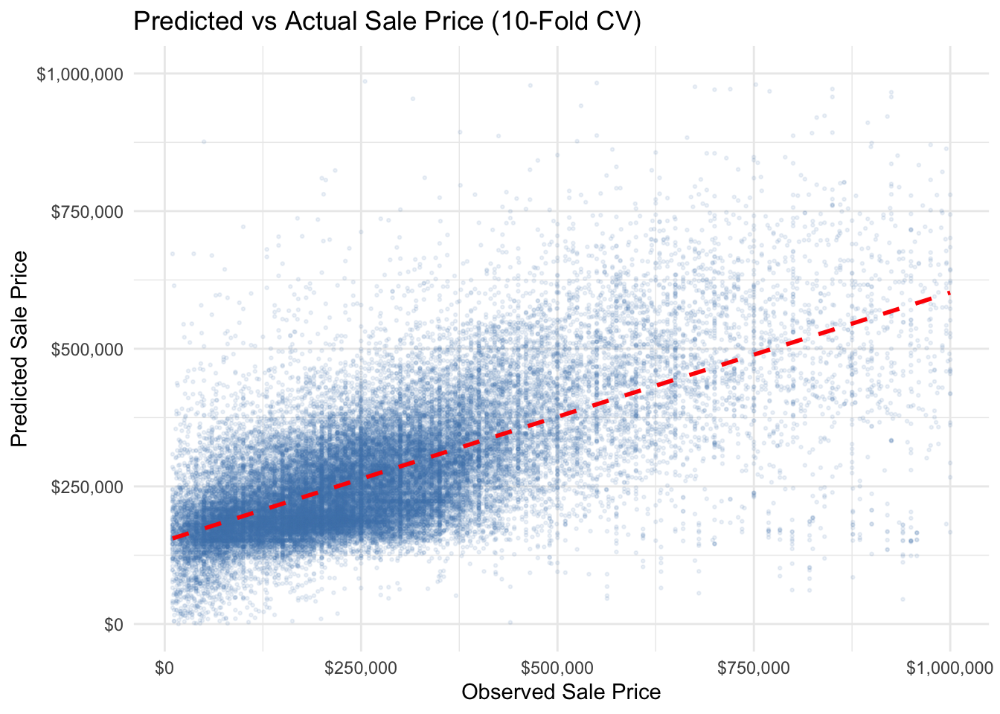
Code
# Model 2: Structural + Spatial
ggplot(cv_m2$pred, aes(x = obs, y = pred)) +
geom_point(alpha = 0.1, size = 0.5, color = "steelblue") +
geom_smooth(method = "lm", color = "red", linetype = "dashed", se = FALSE) +
scale_x_continuous(labels = scales::dollar) +
scale_y_continuous(labels = scales::dollar, limits = c(0, 1000000)) +
labs(
title = "Predicted vs Actual Sale Price (10-Fold CV)",
x = "Observed Sale Price",
y = "Predicted Sale Price"
) +
theme_minimal()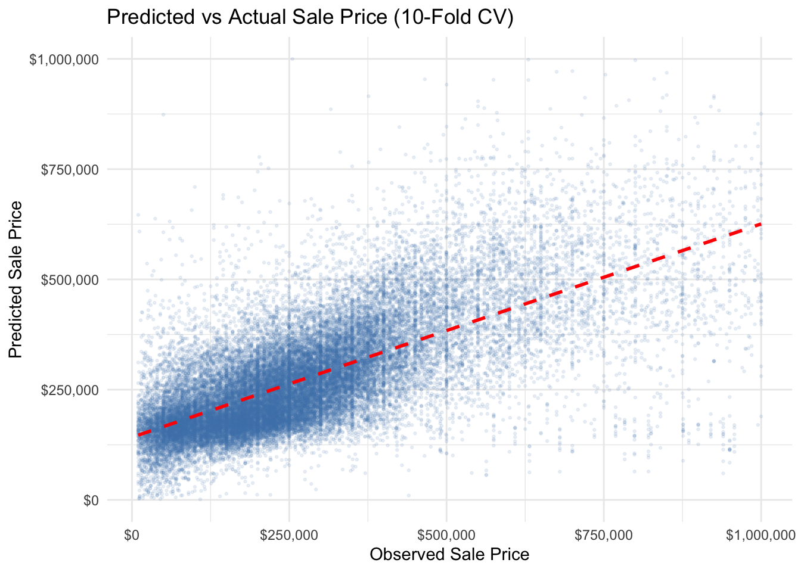
Code
## Model 6 Spatial + Structural + Fixed Effects (Neighborhood) + Interaction Effect
ggplot(cv_m6$pred, aes(x = obs, y = pred)) +
geom_point(alpha = 0.1, size = 0.5, color = "steelblue") +
geom_smooth(method = "lm", color = "red", linetype = "dashed", se = FALSE) +
scale_x_continuous(labels = scales::dollar) +
scale_y_continuous(labels = scales::dollar, limits = c(0, 1000000)) +
labs(
title = "Predicted vs Actual Sale Price (10-Fold CV)",
x = "Observed Sale Price",
y = "Predicted Sale Price"
) +
theme_minimal()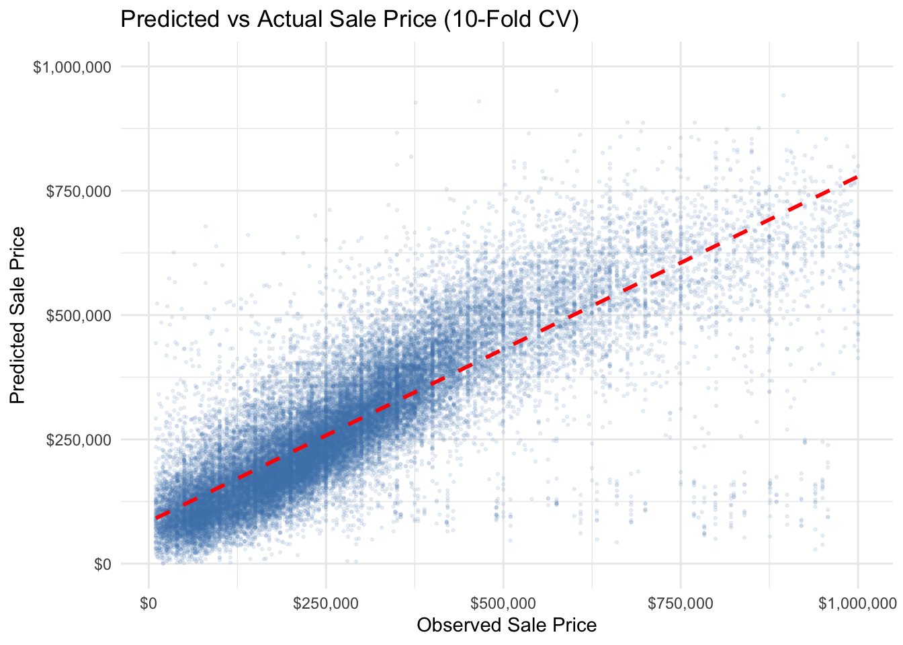
Code
# Final Model: Spatial + Structural + Fixed Effects (CT + Catchment) (FINAL MODEL)
ggplot(cv_final$pred, aes(x = obs, y = pred)) +
geom_point(alpha = 0.1, size = 0.5, color = "steelblue") +
geom_smooth(method = "lm", color = "red", linetype = "dashed", se = FALSE) +
scale_x_continuous(labels = scales::dollar) +
scale_y_continuous(labels = scales::dollar, limits = c(0, 1000000)) +
labs(
title = "Predicted vs Actual Sale Price (10-Fold CV)",
x = "Observed Sale Price",
y = "Predicted Sale Price"
) +
theme_minimal()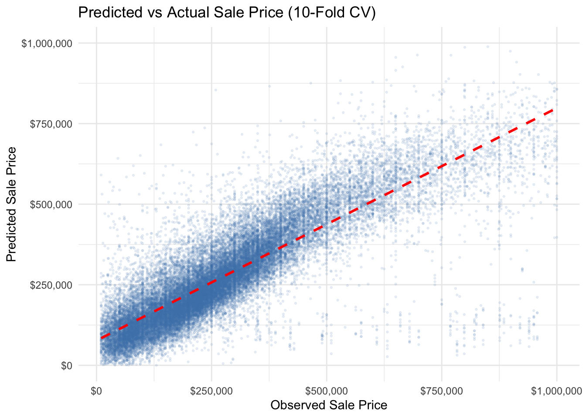